Zoom Out
Zoom In
Animate
Feuerthalen
Flurlingen
Laufen-Uhwiesen
Dachsen
Benken
Unterstammheim
Trüllikon
Rheinau
Oberstammheim
Waltalingen
Marthalen
Truttikon
Ossingen
Rafz
Wil
Kleinandelfingen
Wasterkingen
Andelfingen
Adlikon
Hüntwangen
Flaach
Thalheim a.d.Th.
Altikon
Eglisau
Volken
Humlikon
Dorf
Dägerlen
Glattfelden
Dinhard
Ellikon a.d.Th.
Berg a.I.
Henggart
Weiach
Rickenbach
Buch a.I.
Hettlingen
Freienstein-Teufen
Bülach
Stadel
Wiesendangen
Rorbas
Seuzach
Bachs
Hochfelden
Dättlikon
Hagenbuch
Oberweningen
Embrach
Niederweningen
Neerach
Schleinikon
Schöfflisdorf
Pfungen
Elsau
Höri
Steinmaur
Elgg
Bachenbülach
Winkel
Oberembrach
Hofstetten
Niederglatt
Oberglatt
Lufingen
Niederhasli
Schlatt
Brütten
Dielsdorf
Regensberg
Kloten
Boppelsen
Otelfingen
Nürensdorf
Kyburg
Zell
Rümlang
Lindau
Buchs
Turbenthal
Illnau-Effretikon
Regensdorf
Bassersdorf
Weisslingen
Dänikon
Hüttikon
Dällikon
Wildberg
Opfikon
Dietlikon
Wallisellen
Oetwil a.d.L
Wila
Weiningen
Wangen-Brüttisellen
Geroldswil
Russikon
Dietikon
Unterengstringen
Oberengstringen
Volketswil
Dübendorf
Schlieren
Fehraltorf
Sternenberg
Pfäffikon
Bauma
Urdorf
Schwerzenbach
Hittnau
Uster
Fällanden
Zürich
Greifensee
Fischenthal
Uitikon
Bäretswil
Birmensdorf
Maur
Seegräben
Zollikon
Stallikon
Zumikon
Wettswil a.A.
Aesch
Wetzikon
Küsnacht
Kilchberg
Bonstetten
Adliswil
Hinwil
Gossau
Mönchaltorf
Egg
Wald
Rüschlikon
Erlenbach
Hedingen
Herrliberg
Thalwil
Meilen
Langnau a.A.
Affoltern a.A.
Bubikon
Grüningen
Dürnten
Ottenbach
Aeugst a.A.
Oetwil a.S.
Uetikon a.S.
Oberrieden
Obfelden
Rüti
Männedorf
Hausen a.A.
Horgen
Hombrechtikon
Mettmenstetten
Stäfa
Rifferswil
Wädenswil
Maschwanden
Knonau
Hirzel
Kappel a.A.
Richterswil
Schönenberg
Hütten
Winterthur
Neftenbach
